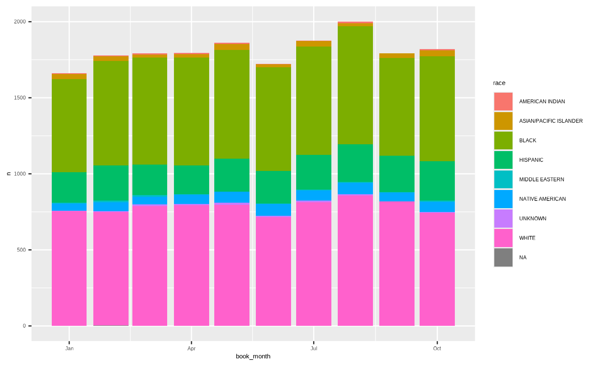
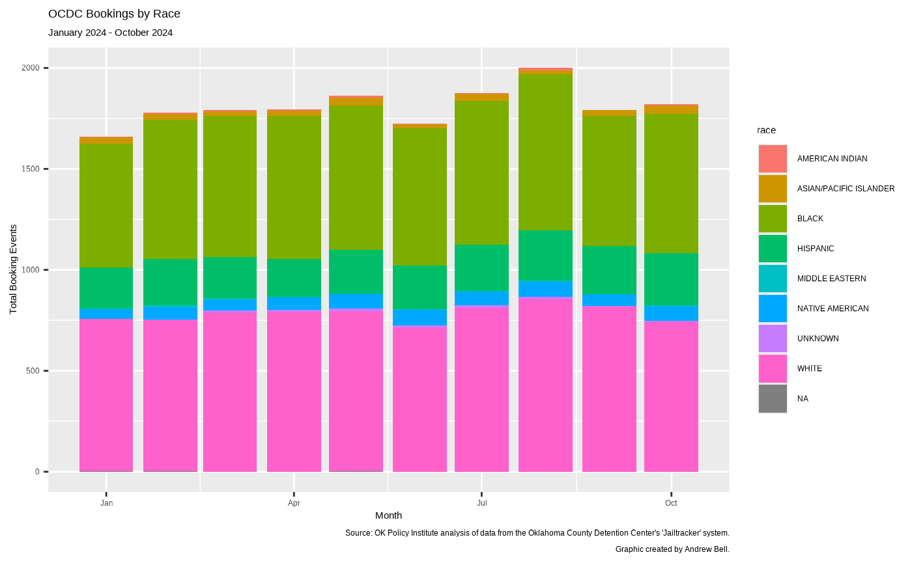
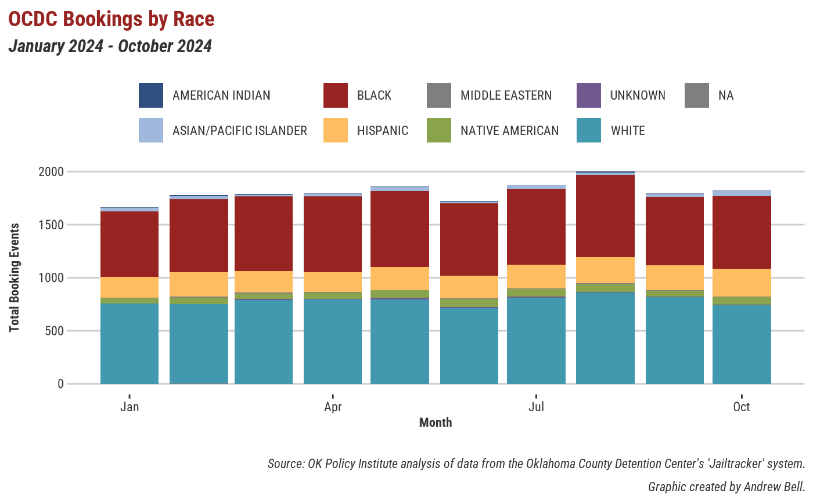
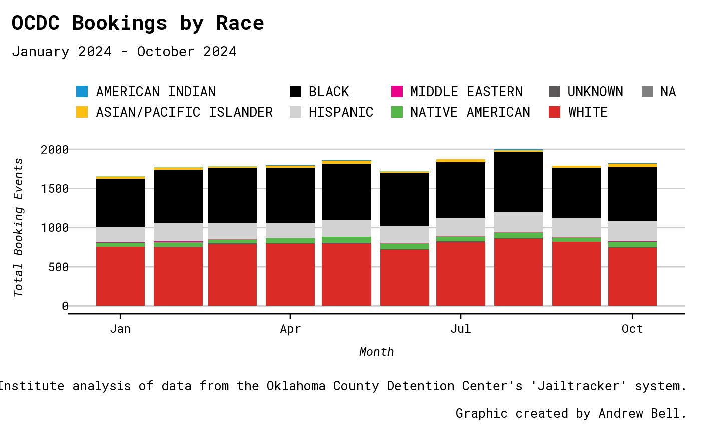

ojoThemes Guide
ojothemes-vignette.RmdThis guide will walk you through the themes and tools available in
the ojoThemes package. We’ll start by loading the package
(plus tidyverse and ojodb for some test data),
then we’ll make some example graphs and tables to show you what’s
available.
library(ojothemes)
#> Setting Mac/Linux options...
library(ojodb)
#> Loading required package: dplyr
#>
#> Attaching package: 'dplyr'
#> The following objects are masked from 'package:stats':
#>
#> filter, lag
#> The following objects are masked from 'package:base':
#>
#> intersect, setdiff, setequal, union
library(dplyr)
library(ggplot2)
#>
#> Attaching package: 'ggplot2'
#> The following objects are masked from 'package:ojothemes':
#>
#> geom_bar, geom_col, geom_jitter, geom_line, geom_path, geom_point,
#> geom_step, geom_text
library(lubridate)
#>
#> Attaching package: 'lubridate'
#> The following objects are masked from 'package:base':
#>
#> date, intersect, setdiff, union
library(gt)
# Test data from OCDC
data <- ojo_tbl(
schema = "ocdc",
table = "arrest"
) |>
filter(
book_date >= "01-01-2024",
book_date < "11-01-2024"
) |>
ojo_collect()
#> ℹ Creating a new default connection to the OJO database.
#> • This connection will be closed automatically when your R session ends.
#> This message is displayed once per session.Themes for ggplot graphs
First, let’s see how this data looks on a default ggplot:
p1 <- data |>
# We'll look at the bookings by race here,
# and we'll look by month just to make it easier to see.
count(
book_month = floor_date(book_date, "months"),
race
) |>
ggplot(aes(x = book_month, y = n, fill = race)) +
geom_col()
p1
Next, let’s gussy this up with our ojoThemes tools.
First, let’s use the ojothemes::ojo_labs() function to
easily add a nice caption to the plot:
p1 <- p1 +
ojo_labs(
analyst_name = "Andrew Bell",
source = "ocdc",
title = "OCDC Bookings by Race",
subtitle = "January 2024 - October 2024",
x = "Month",
y = "Total Booking Events"
)
p1
This is just a wrapper for the normal ggplot2::labs()
function, so we can pass arguments like title,
subtitle, x, and y to it. The
really neat thing, though, is the new analyst_name and
source arguments. These will add a nice little “Graphic
created by…” caption crediting the analyst, and a consistently phrased
note on where the data came from.
- Right now, you can use
"oscn","ocdc", or"ppb"as thesourceargument to get a pre-written, consistent source note. However, if you’re working with something not in one of those domains, you can just tell it something to put in there verbatim, e.g.source = "Source: Data Pulled from The National Insitute of My Ass database".
Next, let’s actually apply our themes. There are two ways to do this:
the first is to just throw + theme_okpi() onto our ggplot,
like so:
p1 + theme_okpi()
This applies not just the theme / fonts, but the color / fill scales
as well. If you want just the theme without the scales, you can do
p1 + theme_okpi_base().
The second way of applying a theme is by using
ojothemes::ojo_set_theme(). This is probably going to be
the most common way of doing things, since we’re rarely going to want to
use multiple themes in the same script / document / etc. Let’s try that
same graph in the “ojo” theme this time:
ojo_set_theme(theme = "ojo")
p1
Themes for gt tables
This package also has built in themes for tables made with
gt. You can use these by replacing the normal
gt() function with one of our themed wrappers (currently
gt_okpi() and gt_ojo()). These have built in
arguments for customization:
-
sourceandanalyst_name(which work just like theojo_labs()function for ggplots) -
titleandsubtitle(self explanatory) -
format_cols(a logical that will apply the auto-styling fromgtto every column ifTRUE) -
fontandfont_sizefor making really big / small tables.
Here’s what a normal, unstyled table looks like…
| race | n |
|---|---|
| AMERICAN INDIAN | 60 |
| ASIAN/PACIFIC ISLANDER | 292 |
| BLACK | 6931 |
| HISPANIC | 2222 |
| MIDDLE EASTERN | 53 |
| NATIVE AMERICAN | 643 |
| UNKNOWN | 70 |
| WHITE | 7826 |
| NA | 6 |
…here’s what our gt_okpi() theme does to it…
data |>
count(race) |>
gt_okpi(
title = "OCDC Bookings by Race",
subtitle = "January 2024 - October 2024",
source = "ocdc",
analyst_name = "Andrew Bell",
format_cols = TRUE
)| OCDC Bookings by Race | |
| January 2024 - October 2024 | |
| Race | N |
|---|---|
| AMERICAN INDIAN | 60 |
| ASIAN/PACIFIC ISLANDER | 292 |
| BLACK | 6,931 |
| HISPANIC | 2,222 |
| MIDDLE EASTERN | 53 |
| NATIVE AMERICAN | 643 |
| UNKNOWN | 70 |
| WHITE | 7,826 |
| NA | 6 |
| Source: OK Policy Institute analysis of data from the Oklahoma County Detention Center's 'Jailtracker' system. | |
| Graphic created by Andrew Bell. | |
…and finally, here’s gt_ojo():
data |>
count(race) |>
gt_ojo(
title = "OCDC Bookings by Race",
subtitle = "January 2024 - October 2024",
source = "ocdc",
analyst_name = "Andrew Bell",
format_cols = TRUE
)| OCDC Bookings by Race | |
| January 2024 - October 2024 | |
| Race | N |
|---|---|
| AMERICAN INDIAN | 60 |
| ASIAN/PACIFIC ISLANDER | 292 |
| BLACK | 6,931 |
| HISPANIC | 2,222 |
| MIDDLE EASTERN | 53 |
| NATIVE AMERICAN | 643 |
| UNKNOWN | 70 |
| WHITE | 7,826 |
| NA | 6 |
| Source: OK Policy Institute analysis of data from the Oklahoma County Detention Center's 'Jailtracker' system. | |
| Graphic created by Andrew Bell. | |